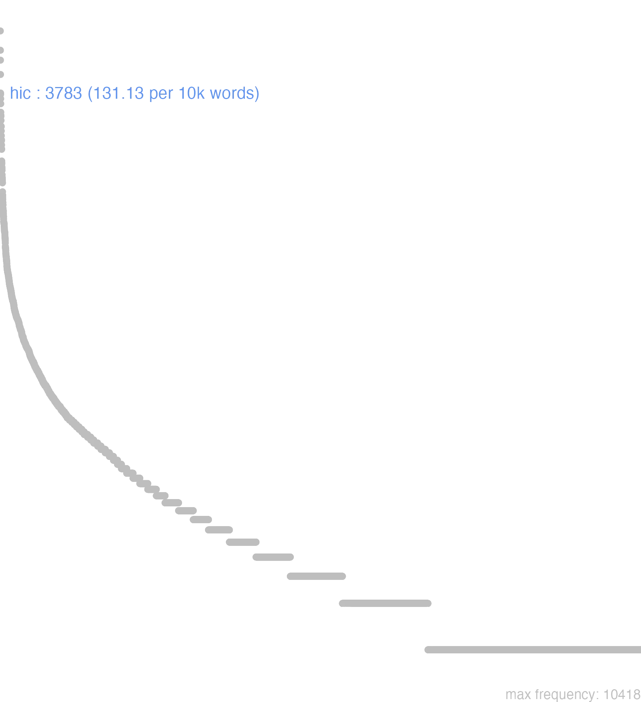

67 hic
67.0.0.1 bases lexicais
id: http://lila-erc.eu/data/id/lemma/105455
classe: determinante
paradigma: pronominal
outras grafias: eic, heic, hicc, hicce, hice, ic
variantes do lema:
no data
hāc
hōc
hicĕ
haecĕ
hōcĕ
no data
67.0.0.2 dicionários tradicionais
haec
nom. sing. f. e nom. acus. pI. n. de hic.
heic
v. hic. hi
nom. pl. m. de hic, pronome.
hice haece hoce
hicce haecce hocce
pron. reforço de hic.
dat. e gen. sg. de hic.
hunc
acus. sg. m. de hic.
2 hāc
abl. f. de hic.
2 hic haec, hoc
pron. demonstr.
Obs.: Principalmente no período arcaico ocorrem as seguintes formas: hic, nom. m. pl. Plaut. PS. 822; haec, nom. f. pl. Plaut. Bac. 1.142; Lucr. 3. 599; Cie. Tusc. I. 22; hibus. dat.. abl. pl. P laut. Cure. 506.
nom. sing. f. e nom. acus. pI. n. de hic.
heic
v. hic. hi
nom. pl. m. de hic, pronome.
hice haece hoce
hicce haecce hocce
pron. reforço de hic.
1 Este. esta. isto:
[EXEMPLOS]
1
hujusce modi requies Ck. De 01’. I. 224 “um repouso desta espécie”.
dat. e gen. sg. de hic.
hunc
acus. sg. m. de hic.
2 hāc
abl. f. de hic.
2 hic haec, hoc
pron. demonstr.
Obs.: Principalmente no período arcaico ocorrem as seguintes formas: hic, nom. m. pl. Plaut. PS. 822; haec, nom. f. pl. Plaut. Bac. 1.142; Lucr. 3. 599; Cie. Tusc. I. 22; hibus. dat.. abl. pl. P laut. Cure. 506.
1 I-Sent. genérico Este, esta, isto de que falo, que mostro Cíc. Rep. 1, 1.
2 II-Sents. especiais Tal com acus. de exclamação:
3 II-Sents. especiais Um ou outro tratando-se de dois objetos T. Lív. 24. . 17.
4 II-Sents. especiais Eis designando o que se vai seguir:
5 II-Sents. especiais Eis. tal é resumindo o que precede Cíc. Ac. I. 22.
6 II-Sents. especiais Neutro hoc + gen.:
[EXEMPLOS]
2
hanc audaciam! Cíc. Verr. 5, 62 “uma tal audácia”.
4
hic est ille Demosthenes Cíc. Tusc. 5. 103 “eis o famoso Demóstenes”.
6
hoc muneris C íc. Or. 2. 50 «este cargo».
2 Hōc
nom. acus. sg. n. de hic.
no data
Hic haec hoc Hicce haecce hocce
1 Cic. este, esta, isto.
ablat. Plaut. por His Hibus genit. Plaut. por Horum Horunc
& c. Hicce et c. Hic
Vide Iste.
Vide Iste.
1 este
no data
67.0.0.3 dados de corpus
![This chart plots collocate by scoreSUBST, for the headword hic here are all the values plotted: collocate: in; scoreSUBST: 0. collocate: ego; scoreSUBST: 0. collocate: res; scoreSUBST: 3. collocate: ad; scoreSUBST: 0. collocate: cum; scoreSUBST: 0. collocate: ex; scoreSUBST: 0. collocate: ab; scoreSUBST: 0. collocate: tu; scoreSUBST: 0. collocate: si; scoreSUBST: 0. collocate: sed; scoreSUBST: 0. collocate: ipse; scoreSUBST: 0. collocate: enim; scoreSUBST: 0. collocate: omnis; scoreSUBST: 0. collocate: igitur; scoreSUBST: 0. collocate: tempus; scoreSUBST: 3. collocate: quidem; scoreSUBST: 0. collocate: locus; scoreSUBST: 2. collocate: qua2; scoreSUBST: 0. collocate: urbs; scoreSUBST: 3. collocate: ordo; scoreSUBST: 4. collocate: causa; scoreSUBST: 2. collocate: autem; scoreSUBST: 0. collocate: unus; scoreSUBST: 0. collocate: tamen; scoreSUBST: 0. collocate: genus; scoreSUBST: 2. collocate: ergo; scoreSUBST: 0. collocate: idem; scoreSUBST: 0. collocate: neque; scoreSUBST: 0. collocate: uero; scoreSUBST: 0. collocate: uox; scoreSUBST: 2. collocate: post; scoreSUBST: 0. collocate: omitto; scoreSUBST: 0. collocate: crimen; scoreSUBST: 2. collocate: annus; scoreSUBST: 2. collocate: coram2; scoreSUBST: 0. collocate: ob; scoreSUBST: 0. collocate: hactenus; scoreSUBST: 0. collocate: affirmo; scoreSUBST: 0. collocate: maledictum; scoreSUBST: 2. collocate: commutatio; scoreSUBST: 2. collocate: Diuitiacus; scoreSUBST: 0. collocate: difficultas; scoreSUBST: 2. collocate: materia; scoreSUBST: 2. collocate: fundamentum; scoreSUBST: 2. collocate: praecipio; scoreSUBST: 0. collocate: persona; scoreSUBST: 2. collocate: insula; scoreSUBST: 2. collocate: quanto; scoreSUBST: 0. collocate: centum; scoreSUBST: 0. collocate: liber2; scoreSUBST: 2. collocate: actio; scoreSUBST: 1. collocate: gladiator; scoreSUBST: 1. collocate: adiungo; scoreSUBST: 0. collocate: decet; scoreSUBST: 0. collocate: inuideo; scoreSUBST: 0. collocate: quamquam2; scoreSUBST: 0. collocate: contra2; scoreSUBST: 0. collocate: significo; scoreSUBST: 0](./Media/wordcloud__xx104-105-99xx__BY_collocate_scoreSUBST.webp)
![This chart plots collocate by scoreADJ, for the headword hic here are all the values plotted: collocate: in; scoreADJ: 0. collocate: ego; scoreADJ: 0. collocate: res; scoreADJ: 0. collocate: ad; scoreADJ: 0. collocate: cum; scoreADJ: 0. collocate: ex; scoreADJ: 0. collocate: ab; scoreADJ: 0. collocate: tu; scoreADJ: 0. collocate: si; scoreADJ: 0. collocate: sed; scoreADJ: 0. collocate: ipse; scoreADJ: 0. collocate: enim; scoreADJ: 0. collocate: omnis; scoreADJ: 0. collocate: igitur; scoreADJ: 0. collocate: tempus; scoreADJ: 0. collocate: quidem; scoreADJ: 0. collocate: locus; scoreADJ: 0. collocate: qua2; scoreADJ: 0. collocate: urbs; scoreADJ: 0. collocate: ordo; scoreADJ: 0. collocate: causa; scoreADJ: 0. collocate: autem; scoreADJ: 0. collocate: unus; scoreADJ: 0. collocate: tamen; scoreADJ: 0. collocate: genus; scoreADJ: 0. collocate: ergo; scoreADJ: 0. collocate: idem; scoreADJ: 0. collocate: neque; scoreADJ: 0. collocate: uero; scoreADJ: 0. collocate: uox; scoreADJ: 0. collocate: post; scoreADJ: 0. collocate: omitto; scoreADJ: 0. collocate: crimen; scoreADJ: 0. collocate: annus; scoreADJ: 0. collocate: coram2; scoreADJ: 0. collocate: ob; scoreADJ: 0. collocate: hactenus; scoreADJ: 0. collocate: affirmo; scoreADJ: 0. collocate: maledictum; scoreADJ: 0. collocate: commutatio; scoreADJ: 0. collocate: Diuitiacus; scoreADJ: 0. collocate: difficultas; scoreADJ: 0. collocate: materia; scoreADJ: 0. collocate: fundamentum; scoreADJ: 0. collocate: praecipio; scoreADJ: 0. collocate: persona; scoreADJ: 0. collocate: insula; scoreADJ: 0. collocate: quanto; scoreADJ: 0. collocate: centum; scoreADJ: 0. collocate: liber2; scoreADJ: 0. collocate: actio; scoreADJ: 0. collocate: gladiator; scoreADJ: 0. collocate: adiungo; scoreADJ: 0. collocate: decet; scoreADJ: 0. collocate: inuideo; scoreADJ: 0. collocate: quamquam2; scoreADJ: 0. collocate: contra2; scoreADJ: 0. collocate: significo; scoreADJ: 0](./Media/wordcloud__xx104-105-99xx__BY_collocate_scoreADJ.webp)
![This chart plots collocate by scoreVERBO, for the headword hic here are all the values plotted: collocate: in; scoreVERBO: 0. collocate: ego; scoreVERBO: 0. collocate: res; scoreVERBO: 0. collocate: ad; scoreVERBO: 0. collocate: cum; scoreVERBO: 0. collocate: ex; scoreVERBO: 0. collocate: ab; scoreVERBO: 0. collocate: tu; scoreVERBO: 0. collocate: si; scoreVERBO: 0. collocate: sed; scoreVERBO: 0. collocate: ipse; scoreVERBO: 0. collocate: enim; scoreVERBO: 0. collocate: omnis; scoreVERBO: 0. collocate: igitur; scoreVERBO: 0. collocate: tempus; scoreVERBO: 0. collocate: quidem; scoreVERBO: 0. collocate: locus; scoreVERBO: 0. collocate: qua2; scoreVERBO: 0. collocate: urbs; scoreVERBO: 0. collocate: ordo; scoreVERBO: 0. collocate: causa; scoreVERBO: 0. collocate: autem; scoreVERBO: 0. collocate: unus; scoreVERBO: 0. collocate: tamen; scoreVERBO: 0. collocate: genus; scoreVERBO: 0. collocate: ergo; scoreVERBO: 0. collocate: idem; scoreVERBO: 0. collocate: neque; scoreVERBO: 0. collocate: uero; scoreVERBO: 0. collocate: uox; scoreVERBO: 0. collocate: post; scoreVERBO: 0. collocate: omitto; scoreVERBO: 2. collocate: crimen; scoreVERBO: 0. collocate: annus; scoreVERBO: 0. collocate: coram2; scoreVERBO: 0. collocate: ob; scoreVERBO: 0. collocate: hactenus; scoreVERBO: 0. collocate: affirmo; scoreVERBO: 2. collocate: maledictum; scoreVERBO: 0. collocate: commutatio; scoreVERBO: 0. collocate: Diuitiacus; scoreVERBO: 0. collocate: difficultas; scoreVERBO: 0. collocate: materia; scoreVERBO: 0. collocate: fundamentum; scoreVERBO: 0. collocate: praecipio; scoreVERBO: 2. collocate: persona; scoreVERBO: 0. collocate: insula; scoreVERBO: 0. collocate: quanto; scoreVERBO: 0. collocate: centum; scoreVERBO: 0. collocate: liber2; scoreVERBO: 0. collocate: actio; scoreVERBO: 0. collocate: gladiator; scoreVERBO: 0. collocate: adiungo; scoreVERBO: 1. collocate: decet; scoreVERBO: 1. collocate: inuideo; scoreVERBO: 1. collocate: quamquam2; scoreVERBO: 0. collocate: contra2; scoreVERBO: 0. collocate: significo; scoreVERBO: 2](./Media/wordcloud__xx104-105-99xx__BY_collocate_scoreVERBO.webp)
![This chart plots collocate by scoreADV, for the headword hic here are all the values plotted: collocate: in; scoreADV: 0. collocate: ego; scoreADV: 0. collocate: res; scoreADV: 0. collocate: ad; scoreADV: 0. collocate: cum; scoreADV: 0. collocate: ex; scoreADV: 0. collocate: ab; scoreADV: 0. collocate: tu; scoreADV: 0. collocate: si; scoreADV: 0. collocate: sed; scoreADV: 0. collocate: ipse; scoreADV: 0. collocate: enim; scoreADV: 2. collocate: omnis; scoreADV: 0. collocate: igitur; scoreADV: 4. collocate: tempus; scoreADV: 0. collocate: quidem; scoreADV: 2. collocate: locus; scoreADV: 0. collocate: qua2; scoreADV: 3. collocate: urbs; scoreADV: 0. collocate: ordo; scoreADV: 0. collocate: causa; scoreADV: 0. collocate: autem; scoreADV: 0. collocate: unus; scoreADV: 0. collocate: tamen; scoreADV: 2. collocate: genus; scoreADV: 0. collocate: ergo; scoreADV: 0. collocate: idem; scoreADV: 0. collocate: neque; scoreADV: 0. collocate: uero; scoreADV: 2. collocate: uox; scoreADV: 0. collocate: post; scoreADV: 0. collocate: omitto; scoreADV: 0. collocate: crimen; scoreADV: 0. collocate: annus; scoreADV: 0. collocate: coram2; scoreADV: 2. collocate: ob; scoreADV: 0. collocate: hactenus; scoreADV: 2. collocate: affirmo; scoreADV: 0. collocate: maledictum; scoreADV: 0. collocate: commutatio; scoreADV: 0. collocate: Diuitiacus; scoreADV: 0. collocate: difficultas; scoreADV: 0. collocate: materia; scoreADV: 0. collocate: fundamentum; scoreADV: 0. collocate: praecipio; scoreADV: 0. collocate: persona; scoreADV: 0. collocate: insula; scoreADV: 0. collocate: quanto; scoreADV: 2. collocate: centum; scoreADV: 0. collocate: liber2; scoreADV: 0. collocate: actio; scoreADV: 0. collocate: gladiator; scoreADV: 0. collocate: adiungo; scoreADV: 0. collocate: decet; scoreADV: 0. collocate: inuideo; scoreADV: 0. collocate: quamquam2; scoreADV: 2. collocate: contra2; scoreADV: 2. collocate: significo; scoreADV: 0](./Media/wordcloud__xx104-105-99xx__BY_collocate_scoreADV.webp)
![This chart plots collocate by scoreFUNC, for the headword hic here are all the values plotted: collocate: in; scoreFUNC: 40. collocate: ego; scoreFUNC: 0. collocate: res; scoreFUNC: 0. collocate: ad; scoreFUNC: 30. collocate: cum; scoreFUNC: 20. collocate: ex; scoreFUNC: 30. collocate: ab; scoreFUNC: 20. collocate: tu; scoreFUNC: 0. collocate: si; scoreFUNC: 20. collocate: sed; scoreFUNC: 0. collocate: ipse; scoreFUNC: 0. collocate: enim; scoreFUNC: 0. collocate: omnis; scoreFUNC: 0. collocate: igitur; scoreFUNC: 0. collocate: tempus; scoreFUNC: 0. collocate: quidem; scoreFUNC: 0. collocate: locus; scoreFUNC: 0. collocate: qua2; scoreFUNC: 0. collocate: urbs; scoreFUNC: 0. collocate: ordo; scoreFUNC: 0. collocate: causa; scoreFUNC: 0. collocate: autem; scoreFUNC: 0. collocate: unus; scoreFUNC: 0. collocate: tamen; scoreFUNC: 0. collocate: genus; scoreFUNC: 0. collocate: ergo; scoreFUNC: 0. collocate: idem; scoreFUNC: 0. collocate: neque; scoreFUNC: 0. collocate: uero; scoreFUNC: 0. collocate: uox; scoreFUNC: 0. collocate: post; scoreFUNC: 20. collocate: omitto; scoreFUNC: 0. collocate: crimen; scoreFUNC: 0. collocate: annus; scoreFUNC: 0. collocate: coram2; scoreFUNC: 0. collocate: ob; scoreFUNC: 20. collocate: hactenus; scoreFUNC: 0. collocate: affirmo; scoreFUNC: 0. collocate: maledictum; scoreFUNC: 0. collocate: commutatio; scoreFUNC: 0. collocate: Diuitiacus; scoreFUNC: 0. collocate: difficultas; scoreFUNC: 0. collocate: materia; scoreFUNC: 0. collocate: fundamentum; scoreFUNC: 0. collocate: praecipio; scoreFUNC: 0. collocate: persona; scoreFUNC: 0. collocate: insula; scoreFUNC: 0. collocate: quanto; scoreFUNC: 0. collocate: centum; scoreFUNC: 0. collocate: liber2; scoreFUNC: 0. collocate: actio; scoreFUNC: 0. collocate: gladiator; scoreFUNC: 0. collocate: adiungo; scoreFUNC: 0. collocate: decet; scoreFUNC: 0. collocate: inuideo; scoreFUNC: 0. collocate: quamquam2; scoreFUNC: 0. collocate: contra2; scoreFUNC: 0. collocate: significo; scoreFUNC: 0](./Media/wordcloud__xx104-105-99xx__BY_collocate_scoreFUNC.webp)
![This charts plots the frequency of lemma by author_Frequencies. The Cicero subcorpus registers the highest normalized frequency, with the value of 142.6 and an absolute frequency of 2289. The Cicero subcorpus follows, with a normalized frequency of 142.6 and an absolute frequency of 2289. the subcorpus with the least normalized frequency is Tacitus with the normalized value of 44.63 and an absolute freqeuncy of 13. here are all the values: subcorpus: Caesar ; normalized frequency: 360 ; absolute frequency: 135.961930659415. subcorpus: Cicero ; normalized frequency: 2289 ; absolute frequency: 142.595499738357. subcorpus: Horatius ; normalized frequency: 156 ; absolute frequency: 138.531213924163. subcorpus: Ovidius ; normalized frequency: 48 ; absolute frequency: 82.3610157858614. subcorpus: Phaedrus ; normalized frequency: 61 ; absolute frequency: 92.6066494610597. subcorpus: Sallustius ; normalized frequency: 61 ; absolute frequency: 56.58102216863. subcorpus: Seneca ; normalized frequency: 722 ; absolute frequency: 134.749258132547. subcorpus: Suetonius ; normalized frequency: 6 ; absolute frequency: 66.1521499448732. subcorpus: Tacitus ; normalized frequency: 13 ; absolute frequency: 44.6275317542053. subcorpus: Vergilius ; normalized frequency: 45 ; absolute frequency: 86.8725868725869. subcorpus: Hieronymus ; normalized frequency: 22 ; absolute frequency: 49.4270950348236](./Media/barchart__xx104-105-99xx__lemma_BY_author_Frequencies.webp)
![This charts plots the frequency of lemma by genre_Frequencies. The Prosa.oratória subcorpus registers the highest normalized frequency, with the value of 163.7 and an absolute frequency of 1705. The Prosa.filosófica subcorpus follows, with a normalized frequency of 136.08 and an absolute frequency of 826. the subcorpus with the least normalized frequency is Prosa.ficcional with the normalized value of 49.43 and an absolute freqeuncy of 22. here are all the values: subcorpus: Prosa.histórica ; normalized frequency: 440 ; absolute frequency: 107.110689159911. subcorpus: Prosa.filosófica ; normalized frequency: 826 ; absolute frequency: 136.076835636975. subcorpus: Prosa.oratória ; normalized frequency: 1705 ; absolute frequency: 163.701477633866. subcorpus: Prosa.epistolográfica ; normalized frequency: 405 ; absolute frequency: 107.316039110734. subcorpus: Poesia.lírica ; normalized frequency: 159 ; absolute frequency: 133.759569277362. subcorpus: Poesia.didática ; normalized frequency: 106 ; absolute frequency: 89.9143269149207. subcorpus: Poesia.trágica ; normalized frequency: 75 ; absolute frequency: 65.1494093120222. subcorpus: Poesia.épica ; normalized frequency: 45 ; absolute frequency: 86.8725868725869. subcorpus: Prosa.ficcional ; normalized frequency: 22 ; absolute frequency: 49.4270950348236](./Media/barchart__xx104-105-99xx__lemma_BY_genre_Frequencies.webp)
![This charts plots the frequency of lemma by period_Frequencies. The I.a.C. subcorpus registers the highest normalized frequency, with the value of 135.63 and an absolute frequency of 2914. The I.a.C. subcorpus follows, with a normalized frequency of 135.63 and an absolute frequency of 2914. the subcorpus with the least normalized frequency is IV.d.C. with the normalized value of 49.43 and an absolute freqeuncy of 22. here are all the values: subcorpus: I.a.C. ; normalized frequency: 2914 ; absolute frequency: 135.629508959739. subcorpus: I.d.C. ; normalized frequency: 828 ; absolute frequency: 126.663607159247. subcorpus: II.d.C. ; normalized frequency: 19 ; absolute frequency: 49.738219895288. subcorpus: IV.d.C. ; normalized frequency: 22 ; absolute frequency: 49.4270950348236](./Media/barchart__xx104-105-99xx__lemma_BY_period_Frequencies.webp)
haec igitur
Cic.Att.2.11.1
É isso então [JDD]
sed haec hactenus
Cic.Amici.55
Mas estas coisas até aqui. [JDD]
hunc quoque felicem
Cic.Phil.3.26.8
Feliz este também! [JDD]
cogitanti autem haec fere succurrebant
Cic.Att.2.16.1
Enquanto eu refletia, me vinha mais ou menos isto. [JDD]
uim hoc quidem est adferre
Cic.Amici.26
Isso é, certamente, fazer-me violência. [JDD]
genus hoc est voluptatis meae
Cic.Att.1.9.2
Este é meu gênero de prazer. [JDD]
haec primae actionis erit accusatio
Cic.Ver.1.56
56 Esta sera a acusação da primeiro ação. [JDD]
unum dissimile quod huic merito
Cic.Att.4.8A.2
uma única diferença, é que ele mereceu. [JDD]
hanc unam gratiam potentiamque nouerunt
Caes.Gal.6.15.2
Conhecem apenas esse único prestígio e poder. [JDD]
fundamentum hoc esse dixi culmen est
Sen.Ep.23.1
Eu disse ser este o fundamento: é o ponto culminante. [JDD]
hic est locus soluendi aeris alieni
Sen.Ep.23.9
Este é o lugar de te pagar com dinheiro alheio. [JDD]
mansisses profecto si haec fore putassemus
Cic.Att.2.22.1
Terias permanecido, sem dúvida, se tivéssemos imaginado que aconteceriam essas coisas. [JDD]
post haec ait iunge datos currus
Sen.Prov.5.11
Após isso, diz: “Atrela os carros oferecidos! [JDD]
quartus si etiam hoc quaeris Hortensius
Cic.Att.1.13.2
o quarto, se ainda queres saber, Hortêncio. [JDD]
hoc autem commune officium καθῆκον vocant
Cic.Off.1.8
ao passo que chamam o dever comum καθήκον. [JDD, de outra edição]
multo haec inquam nostra res maior
Cic.Att.1.16.5
este meu caso, eu garanto, foi muito maior. [JDD]
Germani multum ab hac consuetudine differunt
Caes.Gal.6.21.1
Os germanos diferem muito desse costume. [JDD]
iacere hos post terga iubemur . ’
Ov.Met.1.394
estas somos ordenados a atirar atrás das costas.” [JDD, de outra edição]
hoc enim ad edendas operas tempus acceperat
Sen.Ep.29.6
pois tinha escolhido este momento para dar a conhecer suas obras.[*]
cuperem vultum videre tuum cum haec legeres
Cic.Att.4.17.4
Eu desejaria ver tua cara quando lesses estas coisas. [JDD]
hoc enim ipsum philosophiae seruire libertas est
Sen.Ep.8.7
pois ser escravo da filosofia é precisamente a liberdade. [JDD]
nosti iam in hac materia sonitus nostros
Cic.Att.1.14.4
Já conheces meu tom nesta matéria. [JDD]
quam dissimilis hic dies illi tempori uidebatur
Cic.Ver.2.4.77.11
Quão diferente lhes parecia este dia daquele momento! [JDD]
haec sunt ut opinor in re publica
Cic.Att.1.19.5
Isto é, a meu ver, o que há na república. [JDD]
hunc iudicem ex kalendis Ianuariis non habebimus
Cic.Ver.1.29
Esse juiz não o teremos a partir das calendas de janeiro [1º. de janeiro]. [JDD]
tollite hanc nullam tam prauae sententiae causam reperietis
Cic.Phil.14.3.8
Tirai esta causa: não encontrareis nenhuma outra para uma proposta tão ruim. [JDD]
Haec inquit merces fraudis a superis datur .
Phaed.1.17
“Esta”, diz, “é a recompensa dada pelos deuses para as trapaças.” [JDD]
non potest artifex mutare materiam hoc passa est
Sen.Prov.5.9
O artesão não pode mudar a matéria. Esta é a condição. [JDD, de outra edição]
Atque haec quidem quaestio communis est omnium philosophorum
Cic.Off.1.5
E, na verdade, esta questão é comum a todos os filósofos. [JDD]
si locare voluisses duobus his muneribus liber esses
Cic.Att.4.4A.2
Se tivesses querido alugá-los, com estes dois espetáculos terias amortizado a dívida. [JDD, de outra edição]
haec eadem quacumque exercitum duxit fecit M. Antonius
Cic.Phil.3.31.12
Essas mesmas coisas fez Marco Antônio, onde quer que tenha levado seu exército. [JDD, de outra edição]
desertus est locus hic et iam hora praeterivit
Vulg.Marc.6.35
Este local é deserto e já passou a hora. [JDD]
sed de hoc alias nunc redeo ad augurem
Cic.Amici.1
Mas sobre ele, em outra ocasião; agora volto ao áugure. [JDD]
senatus haec intellegit consul uidet hic tamen uiuit
Cic.Catil.1.2.1
O senado sabe essas coisas. O cônsul as vê; este, no entanto, vive. [JDD]
haec nec hominis nec ad hominem uox est
Cic.Lig.16
Esta fala não é nem de um homem nem para um homem. [JDD]
hoc illius munus in tua diligentia positum est
Cic.Att.2.1.12
Esse presente dele foi colocado aos teus cuidados. [JDD]
hoc vero regnum est et ferri nullo pacto potest
Cic.Att.2.12.1
Isso na verdade é tirania e não pode ser tolerado de modo algum. [JDD]
hunc murus circumdatus arcem efficit et cum oppido coniungit
Caes.Gal.1.38.6
Um muro em torno faz dessa montanha uma cidadela e a une com a cidade. [JDD]
aut hoc ipsum succedit in locum uoluptatium nullis egere
Sen.Ep.12.5
ou isso mesmo substitui o lugar dos prazeres, não ter necessidade de nenhum. [JDD]
omnia haec mala ab intus procedunt et communicant hominem
Vulg.Marc.7.23
Todos esses males saem de dentro e contaminam o homem. [JDD]
cognoscite Quirites non enim hoc sine causa quaeri uidetur
Cic.Man.22
Ficai sabendo, Quirites; pois isso não parece ser perguntado sem motivo. [JDD]
hi ad utramque ripam fluminis agros aedificia uicosque habebant
Caes.Gal.4.4.2
estes tinham, em uma e outra margem do rio, campos, edifícios e aldeias. [JDD, de outra edição]
post hunc Apollinem et Martem et Iouem et Mineruam
Caes.Gal.6.17.1
Depois deste, Apolo e Marte e Júpiter e Minerva. [JDD, de outra edição]
quanto ille plura miscebat tanto hic magis in dies conualescebat
Cic.Mil.25
Quanto mais coisas ele [Clódio] agitava, mais este [Milão] se fortalecia a cada dia. [JDD]
atque hoc quidem omnes mortales et intellegunt et re probant
Cic.Amici.24
E, na verdade, todos os mortais entendem isso e aprovam na realidade. [JDD]
sed haec est pridie data quam illa quo conturber magis
Cic.Att.3.8.2
Mas esta foi remetida um dia antes daquela, o que aumenta minha preocupação. [JDD, de outra edição]
huic adiunctum est in mutis animalibus et infantibus non esse
Sen.Ep.124.1
a isto se acrescenta que essa percepção não existe nos animais mudos nem nos bebês. [JDD]
num est num potest magis carere his omnibus quam caret
Cic.Lig.11
Por acaso está, por acaso pode ele carecer de todas estas coisas mais do que carece? [JDD]
Gracchorum potentiam maiorem fuisse arbitramini quam huius gladiatoris futura sit
Cic.Phil.7.17.4
Julgais que o poder dos Gracos tenha sido maior do que será o desse gladiador? [JDD]
hos item ex proximis nauibus cum conspexissent subsecuti hostibus adpropinquauerunt
Caes.Gal.4.25.6
Como igualmente tivessem visto esses dos navios imediatos, seguindo-os se aproximaram dos inimigos. [JDD, de outra edição]
67.0.0.4 Diagrama de Zipf
